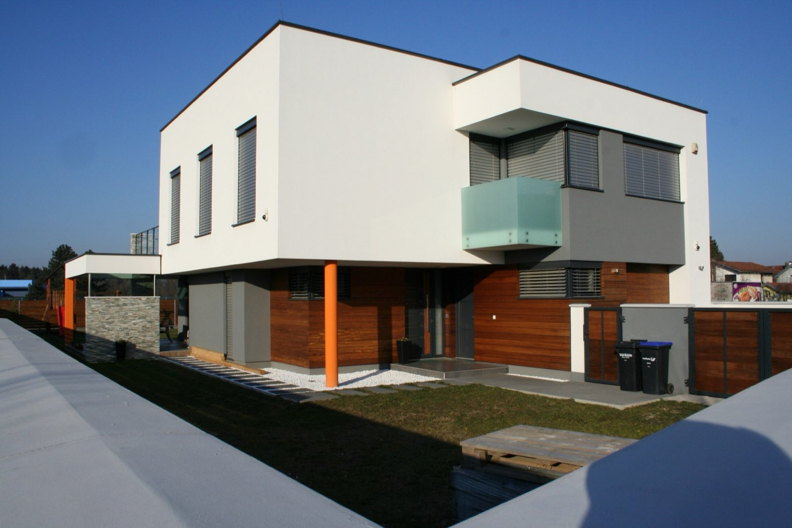
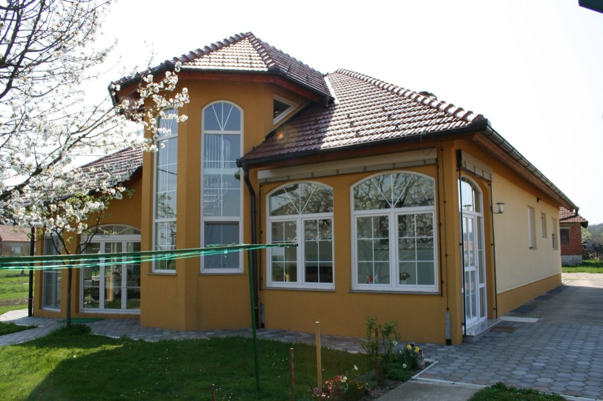
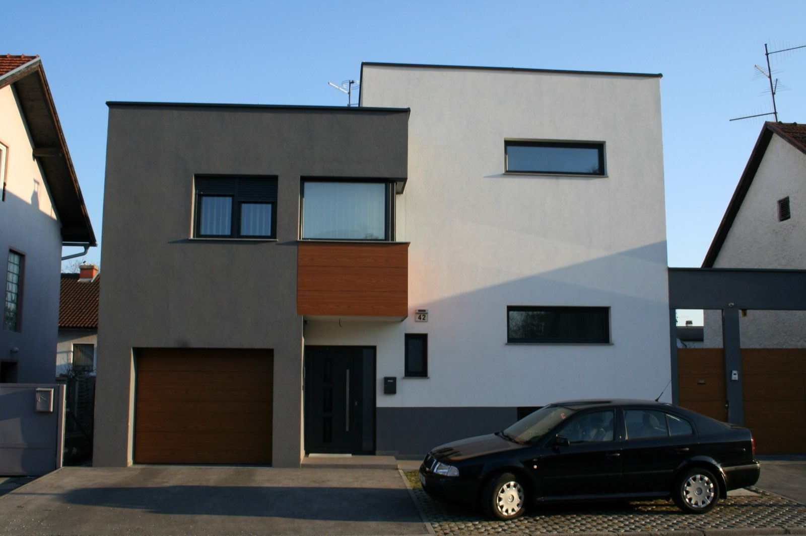
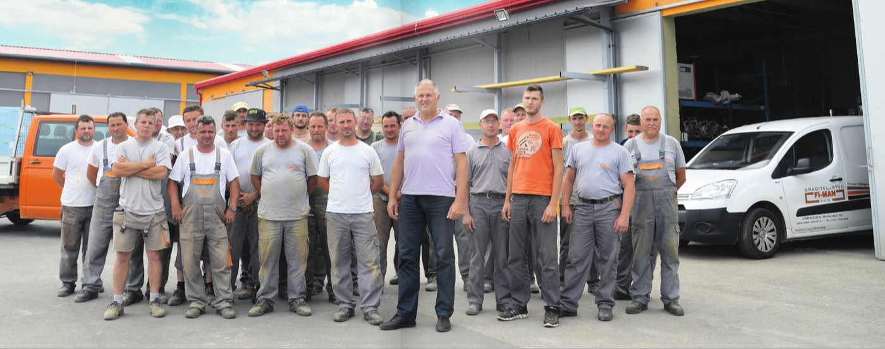
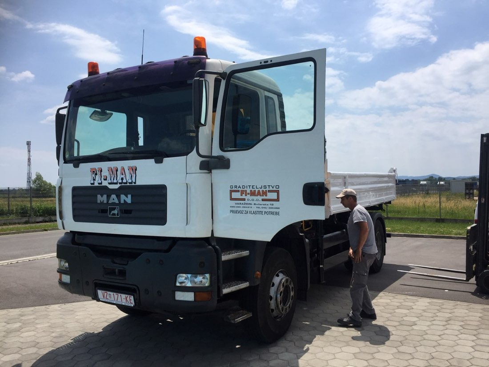

Mjesto gdjeVaše idejepostaju stvarnost.
Gradimo obiteljske kuće te stambene i nestambene zgrade. Uz direktora, gradilišta vode tri voditelja gradilišta – inženjeri građevine.

Izgled i uređenje Vaše kuće ili poslovnog prostora govori puno o Vašoj osobnosti.
Odabir boja, stila, oblika gradnje i elemenata u prostoru otkriva sklonosti kojih možda niste ni svjesni. Najviše odlučuju Vaše osobne želje, uz financijske mogućnosti. Zato prije odluke predlažemo da razmislite o nekoliko stvari.
- Boje i stilKoje Vas boje i koji stil oduševljavaju?
- MaterijaliVolite li raznovrsnost ili jednoličnost odabranih materijala?
- SvjetlostKoja Vam količina svjetlosti odgovara i trebate li prostor zamračiti?
- Otvoren ili zatvoren prostorŽelite li prostor zatvoriti ili ga otvoriti?
- Red i improvizacijaKakav kreativni red ili nered ostavljate za sobom, improvizirate li ili težite kompletnim rješenjima?
- Estetika i funkcijaŠto je u ovom trenutku važnije: estetske ili funkcionalne vrijednosti?
- Trend ili bezvremenskoŽelite li slijediti trendove ili ostati vjerni sebi i bezvremenskim rješenjima?
Stojimo Vam na raspolaganju svojim iskustvom, savjetima i sugestijama.
Kuće koje smo izgradili
Izbor fotografija iz naših referenci: obiteljske kuće klasičnih kosih krovova i moderne kuće ravnih linija.




Više od 25 fotografija kuća, objekata i gradilišta na stranici s referencama.
Sve referenceLjudi koji vode gradilište
Javite se izravno direktoru ili jednom od voditelja gradilišta, inženjera građevine.

Strojevi i gradilišta
Fotografije s naših gradilišta: kamion s dizalicom, kiper i bager, ljeti i zimi.



Imate ideju? Razgovarajmo.
- SjedištePoduzetnička ulica 7, 42202 Trnovec Bartolovečki
- DirektorMarijan Filipašić · 098 284 913
- E-mailfiman13@gmail.com
- OIB03471682798
Pošaljite upit
Opišite što gradite ili planirate, a mi ćemo Vam se javiti.